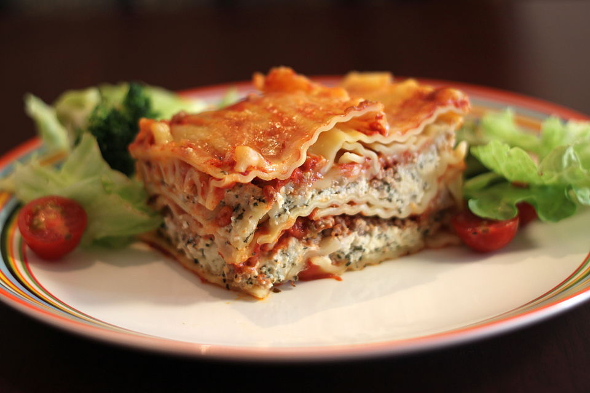

Home
lasagna recipe

Description
This classic beef lasagna is the ultimate comfort food,
perfect for family dinners or entertaining guests. Layers of rich,
savory meat sauce, creamy béchamel,
tender pasta,
and gooey melted cheese come together to create a hearty and incredibly satisfying dish.
It's a bit of a project, but the effort is well worth it for the incredible flavor and impressive presentation.
Ingredients
For the Meat Sauce:
- 1 tablespoon olive oil
- 1 large onion, chopped
- 2 cloves garlic, minced
- 500g ground beef
- 1 (800g) can crushed tomatoes
- 1/2 cup beef broth
- 2 tablespoons tomato paste
- 1 teaspoon dried oregano
- 1/2 teaspoon dried basil
- Salt and freshly ground black pepper to taste
For the Béchamel Sauce:
- 50g unsalted butter
- 50g all-purpose flour
- 750ml milk, warmed
- 1/4 teaspoon nutmeg, grated
- Salt and white pepper to taste
For Assembly:
- 250g lasagna noodles (oven-ready or traditional, cooked al dente if traditional)
- 200g mozzarella cheese, shredded
- 100g Parmesan cheese, grated, plus extra for serving
Steps
-
Make the Meat Sauce:
- Heat olive oil in a large pot or Dutch oven over medium heat. Add chopped onion and cook until softened, about 5-7 minutes. Add minced garlic and cook for another minute until fragrant.
- Add the ground beef to the pot, breaking it up with a spoon. Cook until browned, then drain any excess fat.
- Stir in the crushed tomatoes, beef broth, tomato paste, dried oregano, and dried basil. Bring to a simmer, then reduce heat to low, cover, and let it gently simmer for at least 30 minutes (longer is better for flavor development), stirring occasionally. Season with salt and pepper to taste.
-
Make the Béchamel Sauce:
- In a separate saucepan, melt the butter over medium heat.
- Add the flour and whisk constantly for 1-2 minutes to create a smooth paste (roux).
- Gradually whisk in the warmed milk, a little at a time, making sure each addition is fully incorporated before adding more. Continue whisking until the sauce thickens and is smooth, about 5-7 minutes.
- Remove from heat and stir in the grated nutmeg. Season with salt and white pepper to taste.
-
Prepare Lasagna Noodles (if using traditional):
- If using traditional lasagna noodles, cook them according to package directions until al dente. Drain and rinse with cold water to prevent sticking.
-
Assemble the Lasagna:
- Preheat your oven to 190°C (375°F).
- Spread a thin layer of meat sauce on the bottom of a 9x13 inch (23x33 cm) baking dish.
- Arrange a layer of lasagna noodles over the sauce (trimming if necessary to fit).
- Spread about one-third of the remaining meat sauce over the noodles.
- Spoon about one-third of the béchamel sauce over the meat sauce.
- Sprinkle with a generous layer of shredded mozzarella and some grated Parmesan.
- Repeat the layers: noodles, meat sauce, béchamel, mozzarella, Parmesan.
- Finish with a final layer of noodles, the remaining béchamel sauce, and a generous topping of mozzarella and Parmesan cheese.
-
Bake the Lasagna:
- Cover the baking dish loosely with aluminum foil (you can spray the underside of the foil with cooking spray to prevent cheese from sticking).
- Bake for 25 minutes.
- Remove the foil and bake for another 20-25 minutes, or until the cheese is bubbly and golden brown.
- Let the lasagna rest for 10-15 minutes before slicing and serving. This helps the layers set and makes for cleaner slices.